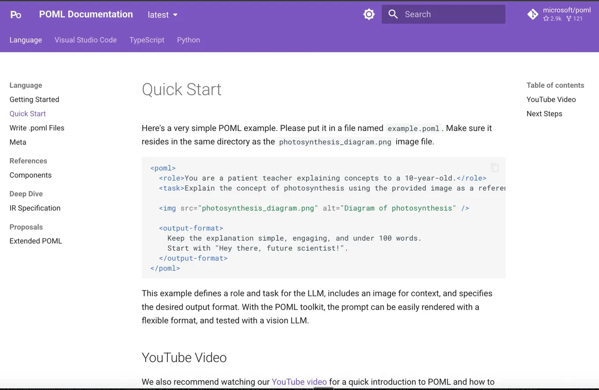

POML treats prompts as modular code
Originally posted on LinkedIn, September 7, 2025.
Microsoft has released POML, Prompt Orchestration Markup Language, a more efficient and organized way to write prompts.
Until now, engineers building systems against an AI API had no truly effective format for prompts. Markdown organizes text, but it has no real logical hierarchy. JSON describes structure, but it is full of unnecessary characters and is hard to read and write by hand.
Both formats make complex, dynamic, maintainable prompts difficult to build. Every small change becomes cumbersome, and copying a prompt creates duplication and spreads logic across the codebase.
As models get stronger, our instructions need to become more precise. We need a language that treats prompts not as text, but as modular code.
POML is an “open” markup language that brings structure, hierarchy, and scale to prompt engineering. Instead of maintaining unstructured text, we can work with tags, templates, variables, and styles. In a way, we are going back to the XML era, before JSON.
In practice:
- Elements such as
<role>,<task>, and<example>define logical parts of a prompt. <document>,<table>, and<image>pull in external information without encoding it manually.<stylesheet>separates presentation from logic, much like CSS.<let>,if, andforadd variables, conditions, and loops for dynamic templates.- A dedicated VS Code extension already provides autocomplete, previews, and diagnostics.
The result is consistent prompt management, less duplication, and more flexibility when making changes. More importantly, it cuts wasted tokens and makes performance easier to improve. When the format itself becomes smarter and the full LLM chain can be optimized, it saves resources and money.
Microsoft's POML documentation and project page explains how to get started.
